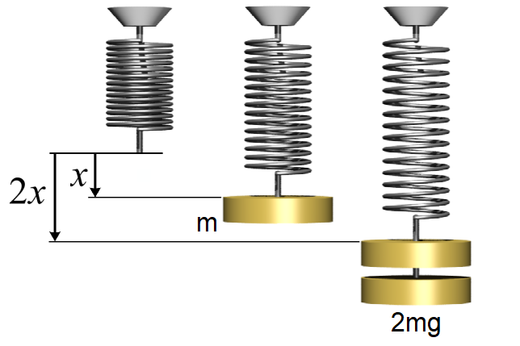
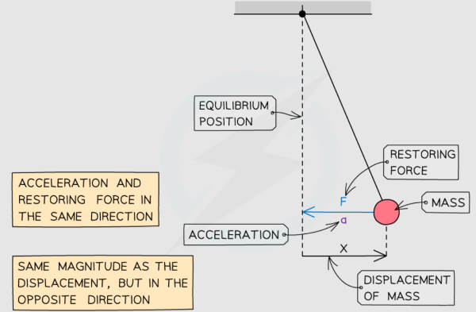
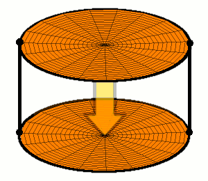
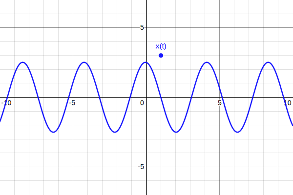
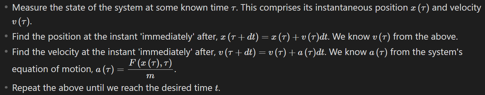
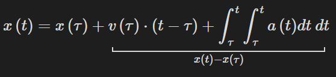
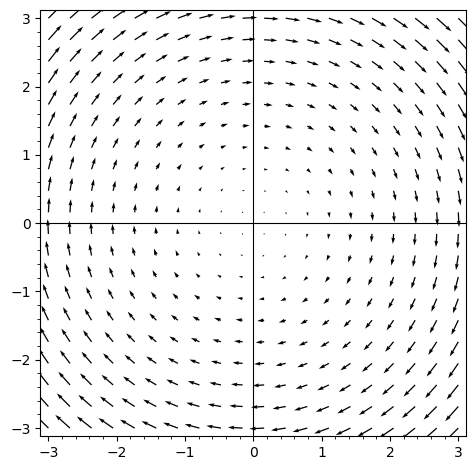

<!DOCTYPE html>
<html lang="en">
  <head>
    <meta charset="utf-8" />
    <meta name="viewport" content="width=device-width, initial-scale=1.0, maximum-scale=1.0, user-scalable=no" />

    <title></title>
    <link rel="stylesheet" href="dist/reveal.css" />
    <link rel="stylesheet" href="dist/theme/black.css" id="theme" />
    <link rel="stylesheet" href="plugin/highlight/zenburn.css" />
	<link rel="stylesheet" href="css/layout.css" />
	<link rel="stylesheet" href="plugin/customcontrols/style.css">


    <script defer src="dist/fontawesome/all.min.js"></script>

	<script type="text/javascript">
		var forgetPop = true;
		function onPopState(event) {
			if(forgetPop){
				forgetPop = false;
			} else {
				parent.postMessage(event.target.location.href, "app://obsidian.md");
			}
        }
		window.onpopstate = onPopState;
		window.onmessage = event => {
			if(event.data == "reload"){
				window.document.location.reload();
			}
			forgetPop = true;
		}

		function fitElements(){
			const itemsToFit = document.getElementsByClassName('fitText');
			for (const item in itemsToFit) {
				if (Object.hasOwnProperty.call(itemsToFit, item)) {
					var element = itemsToFit[item];
					fitElement(element,1, 1000);
					element.classList.remove('fitText');
				}
			}
		}

		function fitElement(element, start, end){

			let size = (end + start) / 2;
			element.style.fontSize = `${size}px`;

			if(Math.abs(start - end) < 1){
				while(element.scrollHeight > element.offsetHeight){
					size--;
					element.style.fontSize = `${size}px`;
				}
				return;
			}

			if(element.scrollHeight > element.offsetHeight){
				fitElement(element, start, size);
			} else {
				fitElement(element, size, end);
			}		
		}


		document.onreadystatechange = () => {
			fitElements();
			if (document.readyState === 'complete') {
				if (window.location.href.indexOf("?export") != -1){
					parent.postMessage(event.target.location.href, "app://obsidian.md");
				}
				if (window.location.href.indexOf("print-pdf") != -1){
					let stateCheck = setInterval(() => {
						clearInterval(stateCheck);
						window.print();
					}, 250);
				}
			}
	};


        </script>
  </head>
  <body>
    <div class="reveal">
      <div class="slides"><section  data-markdown><script type="text/template"><!-- .slide: class="drop" -->
<div class="" style="position: absolute; left: 0px; top: 0px; height: 700px; width: 960px; min-height: 700px; display: flex; flex-direction: column; align-items: center; justify-content: center" absolute="true">

### PHYS 10 Seminar
## Phase Space Analysis of Harmonic Oscillators

By Siddhartha Bhattacharjee (`s3bhatta@uwaterloo.ca`)

10/31/22
</div>

<aside class="notes"><ul>
<li>One of the most influential mathematicians of all time, Henri Poincaré, once said,</li>
</ul>
<blockquote>
<p>Mathematics is the art of giving the same name to different things.</p>
</blockquote>
<ul>
<li><p>A very good morning to one and all present here today. My name is Sid and I am currently in my 1A term, studying mathematical physics. I thank you for being here today and welcome you to join me in this PHYS 10 seminar. </p>
</li>
<li><p>So in this seminar, we will study harmonic oscillators using a really cool method called phase space analysis. Sit back and tie your spring-loaded seat belts!</p>
</li>
</ul>
</aside></script></section><section  data-markdown><script type="text/template"><!-- .slide: class="drop" -->
<div class="" style="position: absolute; left: 0px; top: 0px; height: 700px; width: 960px; min-height: 700px; display: flex; flex-direction: column; align-items: center; justify-content: center" absolute="true">

# Contents

1. What is a harmonic oscillator?
2. How does a harmonic oscillator evolve?
3. What is phase space?
4. How does a harmonic oscillator evolve, again?
5. Conclusion
</div>

<aside class="notes"><ul>
<li>Here&#39;s what we&#39;ll cover in the following slides <code>&lt;slide content&gt;</code>.</li>
</ul>
</aside></script></section><section ><section data-markdown><script type="text/template"><!-- .slide: class="drop" -->
<div class="" style="position: absolute; left: 0px; top: 0px; height: 700px; width: 960px; min-height: 700px; display: flex; flex-direction: column; align-items: center; justify-content: center" absolute="true">

# What is a harmonic oscillator?
</div>

<aside class="notes"><p>Our main creature of interest today is a harmonic oscillator. So, what <em>is</em> it?</p>
</aside></script></section><section data-markdown><script type="text/template"><!-- .slide: class="drop" -->
<div class="" style="position: absolute; left: 0px; top: 0px; height: 700px; width: 960px; min-height: 700px; display: flex; flex-direction: column; align-items: center; justify-content: center" absolute="true">

## Defining harmonic oscillators
</div></script></section><section data-markdown><script type="text/template"><!-- .slide: class="drop" -->
<div class="" style="position: absolute; left: 0px; top: 0px; height: 700px; width: 960px; min-height: 700px; display: flex; flex-direction: column; align-items: center; justify-content: center" absolute="true">

- &shy;<!-- .element: class="fragment" data-fragment-index="1" -->The answer depends on the framework of physics under consideration.

- &shy;<!-- .element: class="fragment" data-fragment-index="2" -->In classical mechanics, a harmonic oscillator is a system which when displaced by a position vector `$\vec{x}$`, experiences a restoring force `$\vec{F} = -k \vec{x}$` (**Hooke's law**) where `$k$` is a constant depending on the nature of the system (called its '**spring constant**').

- &shy;<!-- .element: class="fragment" data-fragment-index="3" -->In general, a harmonic oscillator is a system whose tendency to return to some state of stable equilibrium is **linearly** related to its displacement about the equilibrium point.
</div>

<aside class="notes"><p><code>&lt;point 2&gt;</code> The reason <code>$k$</code> is called the spring constant is that in the case of springs, which are a special kind of harmonic oscillators as we shall see, <code>$k$</code> turns out to be a useful measure of the spring&#39;s stiffness. This applies to other materials too.</p>
</aside></script></section><section data-markdown><script type="text/template"><!-- .slide: class="drop" -->
<div class="" style="position: absolute; left: 0px; top: 0px; height: 700px; width: 960px; min-height: 700px; display: flex; flex-direction: column; align-items: center; justify-content: center" absolute="true">

## Examples of harmonic oscillators
</div>

<aside class="notes"><p>Now that we know how a harmonic oscillator is defined, it begs the question, &#39;well, what real-life physical systems motivate the said definition&#39;? The answer is that there are simply too many examples. But let&#39;s look at some of the most common and simple ones.</p>
</aside></script></section><section data-markdown><script type="text/template"><!-- .slide: class="drop" -->
<div class="" style="position: absolute; left: 0px; top: 0px; height: 700px; width: 960px; min-height: 700px; display: flex; flex-direction: column; align-items: center; justify-content: center" absolute="true">

- A **spring** gently displaced from equilibrium within its elastic limit.


</div></script></section><section data-markdown><script type="text/template"><!-- .slide: class="drop" -->
<div class="" style="position: absolute; left: 0px; top: 0px; height: 700px; width: 960px; min-height: 700px; display: flex; flex-direction: column; align-items: center; justify-content: center" absolute="true">

- A **simple pendulum** displaced from its mean position by a small angle.


</div></script></section><section data-markdown><script type="text/template"><!-- .slide: class="drop" -->
<div class="" style="position: absolute; left: 0px; top: 0px; height: 700px; width: 960px; min-height: 700px; display: flex; flex-direction: column; align-items: center; justify-content: center" absolute="true">

- The **batter head** of a **drum**.


</div></script></section><section data-markdown><script type="text/template"><!-- .slide: class="drop" -->
<div class="" style="position: absolute; left: 0px; top: 0px; height: 700px; width: 960px; min-height: 700px; display: flex; flex-direction: column; align-items: center; justify-content: center" absolute="true">

- &shy;<!-- .element: class="fragment" data-fragment-index="1" -->The electromagnetic field (as a system of infinite coupled harmonic oscillators in space and in time). Excitations of the electromagnetic field are called photons.

- &shy;<!-- .element: class="fragment" data-fragment-index="2" -->Lattices of atoms are chains of harmonic oscillators. Excitations of these lattices are called phonons.
</div>

<aside class="notes"><ul>
<li><p><code>&lt;point 1&gt;</code> A field is a quantity such as a scalar or vector, associated with every point in space at every point of time. In other words, it is some such quantity dependent on the position and time coordinates <code>$x, y, z, t$</code>. Note that the batter head of a drum is somewhat like a field, in that the height <code>$h$</code> of the stretched batter head over a point with coordinates <code>$x, y$</code> depends on time <code>$t$</code>, so we have a quantity of the form <code>$h \left( x, y, t \right)$</code>.</p>
</li>
<li><p><code>&lt;slide content&gt;</code> Now, just as sound is the mechanical analogue of light, phonons are the mechanical analogue of photons. The study of lattices and phonons forms much of condensed matter physics. In general, the study of fields, their excitations and their quantum behaviour is called quantum field theory and as of 2022, it is the most accurate picture of reality that humans have managed to wrest from nature. For instance, everything we know about particle physics is entirely based on quantum field theory.</p>
</li>
<li><p>To summarize, harmonic oscillators capture a surprisingly diverse range of fundamental phenomena in nature. Hence, it is extremely worthwhile to study them.</p>
</li>
</ul>
</aside></script></section></section><section ><section data-markdown><script type="text/template"><!-- .slide: class="drop" -->
<div class="" style="position: absolute; left: 0px; top: 0px; height: 700px; width: 960px; min-height: 700px; display: flex; flex-direction: column; align-items: center; justify-content: center" absolute="true">

# How does a harmonic oscillator evolve?
</div></script></section><section data-markdown><script type="text/template"><!-- .slide: class="drop" -->
<div class="" style="position: absolute; left: 0px; top: 0px; height: 700px; width: 960px; min-height: 700px; display: flex; flex-direction: column; align-items: center; justify-content: center" absolute="true">

## Equation of motion
</div>

<aside class="notes"><p>The fundamental goal of physics is to predict the evolution of a physical system given some known state at a certain time. The position of a system with respect to time is tracked using equations of motion, which interrelate the position of the system, time and the system&#39;s physical parameters. Thus, to understand how a harmonic oscillator evolves, we will look at its equation of motion. For brevity, we will deal with only linear motion.</p>
</aside></script></section><section data-markdown><script type="text/template"><!-- .slide: class="drop" -->
<div class="" style="position: absolute; left: 0px; top: 0px; height: 700px; width: 960px; min-height: 700px; display: flex; flex-direction: column; align-items: center; justify-content: center" absolute="true">

- From Hooke's law, we have that the position `$x \left( t \right)$` of a harmonic oscillator about its mean position obeys,
`$$F = -k x$$`
- But from Newton's second law of motion, `$F = ma$` and `$a$` is defined to be `$\frac{d^2}{dt^2} x \left( t  \right)$`. Hence,
`$$\boxed{m \frac{d^2}{dt^2} x \left( t \right) = - k x \left( t \right)}$$`
</div>

<aside class="notes"><p>It is important to note what some of the symbols mean in the above equation and what kind of structure the equation has.</p>
</aside></script></section><section data-markdown><script type="text/template"><!-- .slide: class="drop" -->
<div class="" style="position: absolute; left: 0px; top: 0px; height: 700px; width: 960px; min-height: 700px; display: flex; flex-direction: column; align-items: center; justify-content: center" absolute="true">

- &shy;<!-- .element: class="fragment" data-fragment-index="1" -->When we write `$\frac{d^2}{dt^2} x \left( t \right)$`, we mean the second derivative of `$x \left( t \right)$` with respect to `$t$`. This means that we can also write it as `$\frac{d}{dt} \left[ \frac{d}{dt} x \left( t \right) \right]$`.

- &shy;<!-- .element: class="fragment" data-fragment-index="2" -->Newton's second law of motion is mathematically a second-order ordinary differential equation ('ODE'). It is said to be second-order as the highest derivative involved is the second derivative. Furthermore, these derivatives are said to be ordinary as they pertain to single-variable functions.
</div></script></section><section data-markdown><script type="text/template"><!-- .slide: class="drop" -->
<div class="" style="position: absolute; left: 0px; top: 0px; height: 700px; width: 960px; min-height: 700px; display: flex; flex-direction: column; align-items: center; justify-content: center" absolute="true">

- &shy;<!-- .element: class="fragment" data-fragment-index="1" -->Recall the equation of motion for a harmonic oscillator of mass 'm' and spring constant 'k':
`$$m \frac{d^2}{dt^2} x \left( t \right) = - k x \left( t \right)$$`
- &shy;<!-- .element: class="fragment" data-fragment-index="2" -->Analytically solving the above second-order ODE gives the following solution:
`$$x \left( t \right) = A \cos \left( \omega t + \phi \right) + B \sin \left( \omega t + \psi \right)$$`
where `$\displaystyle{\omega = \sqrt{\frac{k}{m}}}$`.
</div></script></section><section data-markdown><script type="text/template"><!-- .slide: class="drop" -->
<div class="" style="position: absolute; left: 0px; top: 0px; height: 700px; width: 960px; min-height: 700px; display: flex; flex-direction: column; align-items: center; justify-content: center" absolute="true">

- &shy;<!-- .element: class="fragment" data-fragment-index="1" -->In other words, the solution `$x \left( t \right)$` is a superposition (i.e. algebraic sum) of two sine and cosine waves with amplitudes `$A$`, `$B$` and phase shifts `$\phi$`, `$\psi$`, respectively. Both the waves have a common angular frequency of `$\omega$` (or frequency of `$\displaystyle{\frac{\omega}{2 \pi}}$`).

- &shy;<!-- .element: class="fragment" data-fragment-index="2" -->*Verifying* that the solution for `$x \left( t \right)$` indeed obeys the equation of motion for a harmonic oscillator, is fairly straightforward — we differentiate it twice with respect to `$t$` and check the result. However, *deriving* the solution from the equation of motion requires complicated mathematical machinery.
</div></script></section><section data-markdown><script type="text/template"><!-- .slide: class="drop" -->
<div class="" style="position: absolute; left: 0px; top: 0px; height: 700px; width: 960px; min-height: 700px; display: flex; flex-direction: column; align-items: center; justify-content: center" absolute="true">



Graph for `$x \left( t \right) = A \cos \left( \omega t + \phi \right) + B \sin \left( \omega t + \psi \right)$`

<!-- Desmos code for above graph
```desmos-graph
	(1,3)|label:x(t)|blue
	y=2 \cos \left( 1.5 x + 0.3 \right) + 0.7 \sin \left( 1.5 x + 1 \right)|blue
``` 
-->
</div>

<aside class="notes"><p>This is how the motion of a harmonic oscillator looks when graphed. Such motion is called simple harmonic motion. We&#39;re assuming that the harmonic oscillator is not affected by any external forces such as damping forces (such harmonic oscillators are also known as simple harmonic oscillators).</p>
</aside></script></section><section data-markdown><script type="text/template"><!-- .slide: class="drop" -->
<div class="" style="position: absolute; left: 0px; top: 0px; height: 700px; width: 960px; min-height: 700px; display: flex; flex-direction: column; align-items: center; justify-content: center" absolute="true">

- &shy;<!-- .element: class="fragment" data-fragment-index="1" -->To simplify our analysis of solutions for `$x \left( t \right)$`, we will not derive them explicitly in the first place! 

- &shy;<!-- .element: class="fragment" data-fragment-index="2" -->Instead, we will study the structure and symmetries of the equation of motion for a harmonic oscillator.
</div>

<aside class="notes"><p>In the beginning of this presentation, we discussed how an equation of motion encodes the time evolution of a physical system. We will thus try to extract the nature of the evolution of a harmonic oscillator, from the equation of motion, without directly solving it. <code>&lt;slide content&gt;</code></p>
</aside></script></section></section><section ><section data-markdown><script type="text/template"><!-- .slide: class="drop" -->
<div class="" style="position: absolute; left: 0px; top: 0px; height: 700px; width: 960px; min-height: 700px; display: flex; flex-direction: column; align-items: center; justify-content: center" absolute="true">

# What is phase space?
</div></script></section><section data-markdown><script type="text/template"><!-- .slide: class="drop" -->
<div class="" style="position: absolute; left: 0px; top: 0px; height: 700px; width: 960px; min-height: 700px; display: flex; flex-direction: column; align-items: center; justify-content: center" absolute="true">

## Predicting the future
</div></script></section><section data-markdown><script type="text/template"><!-- .slide: class="drop" -->
<div class="" style="position: absolute; left: 0px; top: 0px; height: 700px; width: 960px; min-height: 700px; display: flex; flex-direction: column; align-items: center; justify-content: center" absolute="true">

Suppose we know the equation of motion for any given system. How can we use it to predict the state of the underlying system at an arbitrary moment in time? The answer lies in the below procedure.
</div></script></section><section data-markdown><script type="text/template"><!-- .slide: class="drop" -->
<div class="" style="position: absolute; left: 0px; top: 0px; height: 700px; width: 960px; min-height: 700px; display: flex; flex-direction: column; align-items: center; justify-content: center" absolute="true">


</div></script></section><section data-markdown><script type="text/template"><!-- .slide: class="drop" -->
<div class="" style="position: absolute; left: 0px; top: 0px; height: 700px; width: 960px; min-height: 700px; display: flex; flex-direction: column; align-items: center; justify-content: center" absolute="true">

What's really going on in the above recipe is that we're simply integrating acceleration (known from the equation of motion) twice over time to get position, using a known position and velocity at some time:


</div></script></section><section data-markdown><script type="text/template"><!-- .slide: class="drop" -->
<div class="" style="position: absolute; left: 0px; top: 0px; height: 700px; width: 960px; min-height: 700px; display: flex; flex-direction: column; align-items: center; justify-content: center" absolute="true">

- &shy;<!-- .element: class="fragment" data-fragment-index="1" -->The key takeaway from the above observations is that a physical system is characterized at some time by its 'state', and knowing this at a certain instant can allow us to predict the state at any other instant, using the equation of motion for the system — which tells how the state updates with time.

- &shy;<!-- .element: class="fragment" data-fragment-index="2" -->Furthermore, the state of a system at some time comprises not just its instantaneous position, but also velocity.
</div></script></section><section data-markdown><script type="text/template"><!-- .slide: class="drop" -->
<div class="" style="position: absolute; left: 0px; top: 0px; height: 700px; width: 960px; min-height: 700px; display: flex; flex-direction: column; align-items: center; justify-content: center" absolute="true">

## What space does a system move through?
</div>

<aside class="notes"><p>Thus, we&#39;ve seen how physical systems have time-dependent states which are tracked using equations of motion and initial values. As the system undergoes motion, its state changes correspondingly. The system moves through the physical space surrounding us — but what about the abstract notion of its state?</p>
</aside></script></section><section data-markdown><script type="text/template"><!-- .slide: class="drop" -->
<div class="" style="position: absolute; left: 0px; top: 0px; height: 700px; width: 960px; min-height: 700px; display: flex; flex-direction: column; align-items: center; justify-content: center" absolute="true">

## Configuration space
</div></script></section><section data-markdown><script type="text/template"><!-- .slide: class="drop" -->
<div class="" style="position: absolute; left: 0px; top: 0px; height: 700px; width: 960px; min-height: 700px; display: flex; flex-direction: column; align-items: center; justify-content: center" absolute="true">

- &shy;<!-- .element: class="fragment" data-fragment-index="1" -->Notice that the state of a system not only encodes its position but also its velocity. 

- &shy;<!-- .element: class="fragment" data-fragment-index="2" -->Hence, the state of a system lives in the space of all positions and velocities. Such a space is termed as the configuration space of the underlying system. One-dimensional motion occurs in two-dimensional phase space (since one dimension corresponds to one position coordinate `$x$` and one velocity coordinate `$v$`).
</div>

<aside class="notes"><p>In general, the configuration space for a particle moving in three-dimensional space as usual, is <code>$3+3$</code> dimensional i.e. six-dimensional (since we have <code>$3$</code> position coordinates <code>x</code>, <code>y</code>, <code>z</code> and <code>$3$</code> velocity coordinates <code>v_x</code>, <code>v_y</code> and <code>v_z</code>).</p>
</aside></script></section><section data-markdown><script type="text/template"><!-- .slide: class="drop" -->
<div class="" style="position: absolute; left: 0px; top: 0px; height: 700px; width: 960px; min-height: 700px; display: flex; flex-direction: column; align-items: center; justify-content: center" absolute="true">


</div>

<aside class="notes"><ul>
<li><p>As they say, a picture speaks a thousand equations.</p>
</li>
<li><p>Note that we have a velocity vector associated with each point in the trajectory of a system in configuration space. Thus, the velocity vector is characterized by the coordinates <code>x</code> and <code>v</code>. In other words, it is a velocity vector <em>field</em>.</p>
</li>
</ul>
</aside></script></section><section data-markdown><script type="text/template"><!-- .slide: class="drop" -->
<div class="" style="position: absolute; left: 0px; top: 0px; height: 700px; width: 960px; min-height: 700px; display: flex; flex-direction: column; align-items: center; justify-content: center" absolute="true">

Phase space
</div></script></section><section data-markdown><script type="text/template"><!-- .slide: class="drop" -->
<div class="" style="position: absolute; left: 0px; top: 0px; height: 700px; width: 960px; min-height: 700px; display: flex; flex-direction: column; align-items: center; justify-content: center" absolute="true">

- &shy;<!-- .element: class="fragment" data-fragment-index="1" -->In configuration space, we treat position and velocity coordinates on an equal footing as they are both mutually independent quantities characterizing configuration space, through which a system moves in terms of its state.

- &shy;<!-- .element: class="fragment" data-fragment-index="2" -->Phase space is motivated by configuration space. It is a space where the coordinate orthogonal to position is not velocity, but momentum (built on the idea of velocity). Thus, phase space is the space of all positions and momenta.
</div></script></section><section data-markdown><script type="text/template"><!-- .slide: class="drop" -->
<div class="" style="position: absolute; left: 0px; top: 0px; height: 700px; width: 960px; min-height: 700px; display: flex; flex-direction: column; align-items: center; justify-content: center" absolute="true">

- The reason this space is considered is that its symmetric treatment of position and momentum manifest themselves in the equation of motion too, as we shall see!
</div></script></section><section data-markdown><script type="text/template"><!-- .slide: class="drop" -->
<div class="" style="position: absolute; left: 0px; top: 0px; height: 700px; width: 960px; min-height: 700px; display: flex; flex-direction: column; align-items: center; justify-content: center" absolute="true">


</div>

<aside class="notes"><ul>
<li><p>This is what phase space looks like, geometrically speaking. </p>
</li>
<li><p>Note that the trajectory of a system in configuration needn&#39;t have the same shape as that in phase space unless momentum and velocity are linearly related. (which isn&#39;t always the case!)</p>
</li>
<li><p>Let us now explore how harmonic oscillators move in phase space.</p>
</li>
</ul>
</aside></script></section><section data-markdown><script type="text/template"><!-- .slide: class="drop" -->
<div class="" style="position: absolute; left: 0px; top: 0px; height: 700px; width: 960px; min-height: 700px; display: flex; flex-direction: column; align-items: center; justify-content: center" absolute="true">

## Method of decomposition
</div></script></section><section data-markdown><script type="text/template"><!-- .slide: class="drop" -->
<div class="" style="position: absolute; left: 0px; top: 0px; height: 700px; width: 960px; min-height: 700px; display: flex; flex-direction: column; align-items: center; justify-content: center" absolute="true">

- Once again, recall the equation of motion of a one-dimensional harmonic oscillator:
`$$m \frac{d^2}{dt^2} x \left( t \right) = - k x \left( t \right)$$`
- Dividing both sides of the above by `$m$`,
`$$\frac{d^2}{dt^2} x \left( t \right) = - \frac{k}{m} x \left( t \right)$$`
</div></script></section><section data-markdown><script type="text/template"><!-- .slide: class="drop" -->
<div class="" style="position: absolute; left: 0px; top: 0px; height: 700px; width: 960px; min-height: 700px; display: flex; flex-direction: column; align-items: center; justify-content: center" absolute="true">

- Using the parameter `$\displaystyle{\omega = \sqrt{\frac{k}{m}}}$`, we condense `$k$` and `$m$` into a single parameter,
`$$\frac{d^2}{dt^2} x \left( t \right) = - \omega \cdot \omega \cdot x \left( t \right)$$`
- Dividing both sides by `$\omega$`,
`$$
\begin{align}
\omega^{-1} \frac{d^2}{dt^2} x \left( t \right) = - \omega x \left( t \right) && \left( 1 \right)
\end{align}
$$`
</div></script></section><section data-markdown><script type="text/template"><!-- .slide: class="drop" -->
<div class="" style="position: absolute; left: 0px; top: 0px; height: 700px; width: 960px; min-height: 700px; display: flex; flex-direction: column; align-items: center; justify-content: center" absolute="true">

- We now invent a new *abstract* coordinate `$y \left( t \right)$` which we propose to be orthogonal to `$x \left( t \right)$` in phase space. We will justify this later by finding how this choice for momentum makes the equation of motion symmetric for position and momentum in a certain manner.
`$$y \left( t \right) = \omega^{-1} \frac{d}{dt} x \left( t \right)$$`
</div>

<aside class="notes"><p><code>&lt;slide content&gt;</code> We call <code>$y \left( t \right)$</code> an abstract coordinate as it is not a physical length unlike in geometric spaces that represent physical lengths.</p>
</aside></script></section><section data-markdown><script type="text/template"><!-- .slide: class="drop" -->
<div class="" style="position: absolute; left: 0px; top: 0px; height: 700px; width: 960px; min-height: 700px; display: flex; flex-direction: column; align-items: center; justify-content: center" absolute="true">

- Rearranging the above equation, we get,
`$$
\begin{align}
\frac{d}{dx} x \left( t \right) = \omega y \left( t \right) && \left( 2 \right)
\end{align}
$$`
- Since this is a (first-order) differential equation involving the coordinate `$\frac{d}{dt} x \left( t \right)$`, we can think of it as an equation of motion for `$x \left( t \right)$`.
</div></script></section><section data-markdown><script type="text/template"><!-- .slide: class="drop" -->
<div class="" style="position: absolute; left: 0px; top: 0px; height: 700px; width: 960px; min-height: 700px; display: flex; flex-direction: column; align-items: center; justify-content: center" absolute="true">

- We notice in equation `$\left( 1 \right)$` the following:
`$$\frac{d}{dt} \left( \omega^{-1} \frac{d}{dt} x \left( t \right) \right) = - w x \left( t \right)$$`
</div></script></section><section data-markdown><script type="text/template"><!-- .slide: class="drop" -->
<div class="" style="position: absolute; left: 0px; top: 0px; height: 700px; width: 960px; min-height: 700px; display: flex; flex-direction: column; align-items: center; justify-content: center" absolute="true">

- Plugging in equation `$\left( 2 \right)$` i.e. `$y \left( t \right) = \omega^{-1} \frac{d}{dt} x \left( t \right)$`, we find,
`$$
\begin{align}
\frac{d}{dt} y \left( t \right) & = - \omega x \left( t \right) && \left( 3 \right)
\end{align}
$$`
- Since this is a (first-order) differential equation involving `$\frac{d}{dt} y \left( t \right)$`, we can think of it as an equation of motion for `$y \left( t \right)$`.
</div></script></section><section data-markdown><script type="text/template"><!-- .slide: class="drop" -->
<div class="" style="position: absolute; left: 0px; top: 0px; height: 700px; width: 960px; min-height: 700px; display: flex; flex-direction: column; align-items: center; justify-content: center" absolute="true">

- Let us look at the first-order equations of motion we obtained for `$x \left( t \right)$` and `$y \left( t \right)$`, together:
`$$
\begin{align}
\frac{d}{dt} x \left( t \right) & = \omega y \left( t \right) && \left( 2 \right) \\
\frac{d}{dt} y \left( t \right) & = - \omega x \left( t \right) && \left( 3 \right)
\end{align}
$$`
- These are two coupled first-order ordinary differential equations (ODEs). They are said to be coupled as each variable `$x$` and `$y$` appears in multiple differential equations. Notice their symmetry up to signature.
</div>

<aside class="notes"><p><code>&lt;slide content&gt;</code> Symmetry here means that if we interchange position and momentum in either of the above equations of motion, we get the other equation of motion, albeit with a minor sign correction (hence the term &#39;symmetry up to signature&#39;).</p>
</aside></script></section><section data-markdown><script type="text/template"><!-- .slide: class="drop" -->
<div class="" style="position: absolute; left: 0px; top: 0px; height: 700px; width: 960px; min-height: 700px; display: flex; flex-direction: column; align-items: center; justify-content: center" absolute="true">

- Thus, we have decomposed the original equation of motion (with the structure of Newton's second law) which was a second-order ODE, to two first-order coupled ODEs. This is known as the method of decomposition.
</div></script></section><section data-markdown><script type="text/template"><!-- .slide: class="drop" -->
<div class="" style="position: absolute; left: 0px; top: 0px; height: 700px; width: 960px; min-height: 700px; display: flex; flex-direction: column; align-items: center; justify-content: center" absolute="true">

- We did this by 'splitting' the second derivative in the original ODE as the first derivative of a first derivative. First, we defined a momentum coordinate `$y \left( t \right)$` involving `$\displaystyle{\frac{d}{dt} x \left( t \right)}$`. Then, we plugged in momentum into Hooke's law to get an equation involving `$\displaystyle{\frac{d}{dt} y \left( t \right)}$` which implicitly involves `$\displaystyle{\frac{d}{dt} \frac{d}{dt} x \left( t \right)}$`
</div>

<aside class="notes"><p>Let us now understand the geometric significance of the new first-order ODEs (2) and (3), by analysing their meaning in the geometric construct of phase space.</p>
</aside></script></section></section><section ><section data-markdown><script type="text/template"><!-- .slide: class="drop" -->
<div class="" style="position: absolute; left: 0px; top: 0px; height: 700px; width: 960px; min-height: 700px; display: flex; flex-direction: column; align-items: center; justify-content: center" absolute="true">

## How do harmonic oscillators evolve, again?
</div></script></section><section data-markdown><script type="text/template"><!-- .slide: class="drop" -->
<div class="" style="position: absolute; left: 0px; top: 0px; height: 700px; width: 960px; min-height: 700px; display: flex; flex-direction: column; align-items: center; justify-content: center" absolute="true">

## Velocity vector field in phase space
</div>

<aside class="notes"><p>Now, let&#39;s look at what&#39;s called the velocity vector field of a system in phase space. After that, we will apply this idea to the evolution of a harmonic oscillator.</p>
</aside></script></section><section data-markdown><script type="text/template"><!-- .slide: class="drop" -->
<div class="" style="position: absolute; left: 0px; top: 0px; height: 700px; width: 960px; min-height: 700px; display: flex; flex-direction: column; align-items: center; justify-content: center" absolute="true">

- &shy;<!-- .element: class="fragment" data-fragment-index="1" -->Recall that the state of a system at a time `$t$` in phase space is characterized by the instantaneous position and momentum coordinates `$\left( x \left(t \right), y \left( t \right) \right)$`. 

- &shy;<!-- .element: class="fragment" data-fragment-index="2" -->We can also think of the state as a vector in phase space with components `$\left( x \left(t \right), y \left( t \right) \right)$`. As the system evolves in time, the tip of this vector moves and traces out a trajectory in phase space. This is nothing but the position vector `$\vec{u} \left( t \right)$` of the system, in phase space.
</div></script></section><section data-markdown><script type="text/template"><!-- .slide: class="drop" -->
<div class="" style="position: absolute; left: 0px; top: 0px; height: 700px; width: 960px; min-height: 700px; display: flex; flex-direction: column; align-items: center; justify-content: center" absolute="true">


</div></script></section><section data-markdown><script type="text/template"><!-- .slide: class="drop" -->
<div class="" style="position: absolute; left: 0px; top: 0px; height: 700px; width: 960px; min-height: 700px; display: flex; flex-direction: column; align-items: center; justify-content: center" absolute="true">

- The position vector `$\vec{u} \left( t \right)$` can be differentiated with respect to time to get the velocity vector associated with the position vector, `$\displaystyle{\frac{d}{dt} \vec{u} \left( t \right)}$`.

- Every point (position vector) in phase space has a velocity vector which tells us how fast the position vector is changing at that point and in what direction. Thus, there is a velocity vector for every pair of coordinates `$\left( x, y \right)$` which means that `$\displaystyle{\frac{d}{dt} \vec{u} \left( t \right)}$` is actually a velocity vector _field_, `$\displaystyle{\vec{v} \left( \vec{u}, t \right) = \vec{v} \left( x, y, t \right) = \frac{d}{dt} \vec{u} \left( t \right)}$`.
</div></script></section><section data-markdown><script type="text/template"><!-- .slide: class="drop" -->
<div class="" style="position: absolute; left: 0px; top: 0px; height: 700px; width: 960px; min-height: 700px; display: flex; flex-direction: column; align-items: center; justify-content: center" absolute="true">


</div></script></section><section data-markdown><script type="text/template"><!-- .slide: class="drop" -->
<div class="" style="position: absolute; left: 0px; top: 0px; height: 700px; width: 960px; min-height: 700px; display: flex; flex-direction: column; align-items: center; justify-content: center" absolute="true">

## Velocity vector field of harmonic oscillator
</div></script></section><section data-markdown><script type="text/template"><!-- .slide: class="drop" -->
<div class="" style="position: absolute; left: 0px; top: 0px; height: 700px; width: 960px; min-height: 700px; display: flex; flex-direction: column; align-items: center; justify-content: center" absolute="true">

- Armed with the notions of phase space and velocity vector fields, recall the two coupled first-order ODEs for the coordinates of a harmonic oscillator in phase space:
`$$
\begin{align}
\frac{d}{dt} x \left( t \right) & = \omega y \left( t \right) && \left( 2 \right) \\
\frac{d}{dt} y \left( t \right) & = - \omega x \left( t \right) && \left( 3 \right)
\end{align}
$$`
</div></script></section><section data-markdown><script type="text/template"><!-- .slide: class="drop" -->
<div class="" style="position: absolute; left: 0px; top: 0px; height: 700px; width: 960px; min-height: 700px; display: flex; flex-direction: column; align-items: center; justify-content: center" absolute="true">

- We can unify the above derivatives of the components of the position vector in phase space into those of the velocity vector,
`$$\frac{d}{dt} \vec{u} \left( t \right) = \frac{d}{dt} \begin{pmatrix} x \left( t \right) \\ y \left( t \right) \end{pmatrix} = \omega \begin{pmatrix} y \left( t \right) \\ - x \left( t \right) \end{pmatrix}$$`
</div></script></section><section data-markdown><script type="text/template"><!-- .slide: class="drop" -->
<div class="" style="position: absolute; left: 0px; top: 0px; height: 700px; width: 960px; min-height: 700px; display: flex; flex-direction: column; align-items: center; justify-content: center" absolute="true">

- Now, this may seem arbitrary at first, but we compute the dot product of the velocity vector and position vector at each point (we thus get a scalar at each point in phase space, i.e. a scalar field):
`$$
\begin{align}
\frac{d}{dt} \vec{u} \left( t \right) \cdot \vec{u} \left( t \right) & = \omega \begin{pmatrix} y \left( t \right) \\ - x \left( t \right) \end{pmatrix} \cdot \begin{pmatrix} x \left( t \right) \\ y \left( t \right) \end{pmatrix} \\
 & = \omega \left[ y \left( t \right) x \left( t \right) - x \left( t \right) y \left( t \right) \right] \\
 & = 0
\end{align}
$$`
</div></script></section><section data-markdown><script type="text/template"><!-- .slide: class="drop" -->
<div class="" style="position: absolute; left: 0px; top: 0px; height: 700px; width: 960px; min-height: 700px; display: flex; flex-direction: column; align-items: center; justify-content: center" absolute="true">

- Hence, the dot product of the velocity vector and position vector is `$0$` at every point in the phase space.

- Recall that the dot product of two vectors `$\vec{a}$` and `$\vec{b}$` encodes the following geometric information about the two vectors,
`$$\vec{a} \cdot \vec{b} = \| a \| \: \| b \| \: \cos \left( \theta \left( \vec{a}, \vec{b} \right) \right)$$`
where `$\displaystyle{\| \vec{a} \|} = \sqrt{a_x+ a_y^2}$` and `$\theta \left( \vec{a}, \vec{b} \right)$` is the angle between `$\vec{a}$` and `$\vec{b}$`.
</div></script></section><section data-markdown><script type="text/template"><!-- .slide: class="drop" -->
<div class="" style="position: absolute; left: 0px; top: 0px; height: 700px; width: 960px; min-height: 700px; display: flex; flex-direction: column; align-items: center; justify-content: center" absolute="true">

- Since in general we have `$\displaystyle{\| \vec{u} \left( t \right) \| \neq \vec{0}, \| \frac{d}{dt} \vec{u} \left( t \right) \| \neq \vec{0}}$` , we conclude,
`$$
\begin{align}
\frac{d}{dt} \vec{u} \left( t \right) \cdot \vec{u} \left( t \right) & = 0 \\
\implies \cos \left( \theta \left( \vec{u} \left( t \right), \frac{d}{dt} \vec{u} \left( t \right) \right) \right) & = 0 \\
\implies \theta \left( \vec{u} \left( t \right), \frac{d}{dt} \vec{u} \left( t \right) \right)  & = \frac{\pi}{2} && \left[ = 90^\circ \right]
\end{align}
$$`
</div></script></section><section data-markdown><script type="text/template"><!-- .slide: class="drop" -->
<div class="" style="position: absolute; left: 0px; top: 0px; height: 700px; width: 960px; min-height: 700px; display: flex; flex-direction: column; align-items: center; justify-content: center" absolute="true">

- Therefore, the velocity vector is perpendicular to the associated position vector at all points in phase space!


</div>

<aside class="notes"><p>Note in the above plot how the velocity vector field resembles concentric circles. Since velocity dictates change of the position vector, this means that the position vector keeps going round and round in phase space while having fixed magnitude!</p>
</aside></script></section><section data-markdown><script type="text/template"><!-- .slide: class="drop" -->
<div class="" style="position: absolute; left: 0px; top: 0px; height: 700px; width: 960px; min-height: 700px; display: flex; flex-direction: column; align-items: center; justify-content: center" absolute="true">

- &shy;<!-- .element: class="fragment" data-fragment-index="1" -->It turns out that the only way the tip of `$\vec{u}$` can move so that its velocity vector is always perpendicular to it, is if it moves in uniform circular motion about the origin!

- &shy;<!-- .element: class="fragment" data-fragment-index="2" -->It can be shown that the frequency associated with this motion is `$\displaystyle{\frac{\omega}{2 \pi}}$`, as expected.

- &shy;<!-- .element: class="fragment" data-fragment-index="3" -->Since `$x \left( t \right)$` is the horizontal projection of `$\vec{u} \left( t \right)$`; the tip of `$\vec{u}$` moves in uniform circular motion; and the projection of circular motion is sinusoidal, we conclude that so is `$x \left( t \right)$`.
</div></script></section><section data-markdown><script type="text/template"><!-- .slide: class="drop" -->
<div class="" style="position: absolute; left: 0px; top: 0px; height: 700px; width: 960px; min-height: 700px; display: flex; flex-direction: column; align-items: center; justify-content: center" absolute="true">


Time evolution of states in phase space

- We see in the above that distinct trajectories are concentric. This means that a particle cannot jump from a state in one trajectory to another.
</div></script></section><section data-markdown><script type="text/template"><!-- .slide: class="drop" -->
<div class="" style="position: absolute; left: 0px; top: 0px; height: 700px; width: 960px; min-height: 700px; display: flex; flex-direction: column; align-items: center; justify-content: center" absolute="true">

- Further analysis reveals that each trajectory is uniquely labelled by a parameter called 'total energy'. Then, from the above, we can say that the energy of a particle is conserved in its motion, as it cannot jump to trajectories of different total energy! This geometric picture of dynamics extends to physical systems which are not harmonic oscillators too.
</div></script></section></section><section  data-markdown><script type="text/template"><!-- .slide: class="drop" -->
<div class="" style="position: absolute; left: 0px; top: 0px; height: 700px; width: 960px; min-height: 700px; display: flex; flex-direction: column; align-items: center; justify-content: center" absolute="true">

# Conclusion

We showed that the solutions `$x \left( t \right)$` for the equation of motion of a harmonic oscillator are periodic, by performing the method of decomposition on its equation of motion (Hooke's law) and interpreting the new equations of motion in the geometric setting of phase space.

Thank you for patiently listening to this seminar! Hope you all enjoyed! :)
</div></script></section></div>
    </div>

    <script src="dist/reveal.js"></script>

    <script src="plugin/markdown/markdown.js"></script>
    <script src="plugin/highlight/highlight.js"></script>
    <script src="plugin/zoom/zoom.js"></script>
    <script src="plugin/notes/notes.js"></script>
    <script src="plugin/math/math.js"></script>
	<script src="plugin/mermaid/mermaid.js"></script>
	<script src="plugin/chart/chart.min.js"></script>
	<script src="plugin/chart/plugin.js"></script>
	<script src="plugin/customcontrols/plugin.js"></script>

    <script>
      function extend() {
        var target = {};
        for (var i = 0; i < arguments.length; i++) {
          var source = arguments[i];
          for (var key in source) {
            if (source.hasOwnProperty(key)) {
              target[key] = source[key];
            }
          }
        }
        return target;
      }

	  function isLight(color) {
		let hex = color.replace('#', '');

		// convert #fff => #ffffff
		if(hex.length == 3){
			hex = `${hex[0]}${hex[0]}${hex[1]}${hex[1]}${hex[2]}${hex[2]}`;
		}

		const c_r = parseInt(hex.substr(0, 2), 16);
		const c_g = parseInt(hex.substr(2, 2), 16);
		const c_b = parseInt(hex.substr(4, 2), 16);
		const brightness = ((c_r * 299) + (c_g * 587) + (c_b * 114)) / 1000;
		return brightness > 155;
	}

	var bgColor = getComputedStyle(document.documentElement).getPropertyValue('--r-background-color').trim();
	var isLight = isLight(bgColor);

	if(isLight){
		document.body.classList.add('has-light-background');
	} else {
		document.body.classList.add('has-dark-background');
	}

      // default options to init reveal.js
      var defaultOptions = {
        controls: true,
        progress: true,
        history: true,
        center: true,
        transition: 'default', // none/fade/slide/convex/concave/zoom
        plugins: [
          RevealMarkdown,
          RevealHighlight,
          RevealZoom,
          RevealNotes,
          RevealMath.MathJax3,
		  RevealMermaid,
		  RevealChart,
		  RevealCustomControls,
        ],


    	allottedTime: 120 * 1000,

		mathjax3: {
			mathjax: 'plugin/math/mathjax/tex-mml-chtml.js',
		},
		markdown: {
		  gfm: true,
		  mangle: true,
		  pedantic: false,
		  smartLists: false,
		  smartypants: false,
		},

		mermaid: {
			theme: isLight ? 'default' : 'dark',
		},

		customcontrols: {
			controls: [
			]
		},
      };

      // options from URL query string
      var queryOptions = Reveal().getQueryHash() || {};

      var options = extend(defaultOptions, {"width":960,"height":700,"margin":0.04,"controls":true,"progress":true,"slideNumber":false,"transition":"slide","transitionSpeed":"default"}, queryOptions);
    </script>

    <script>
      Reveal.initialize(options);
    </script>
  </body>

  <!-- created with Advanced Slides -->
</html>
